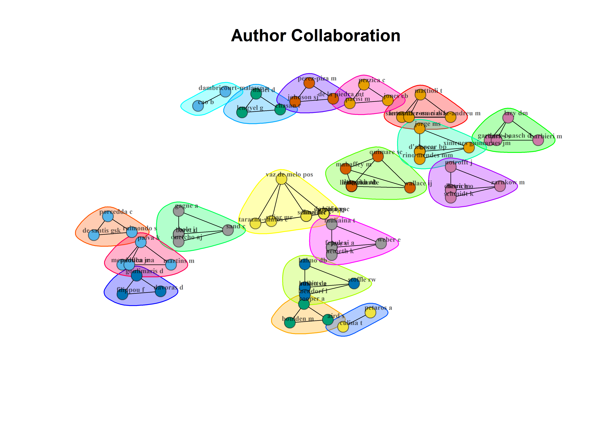
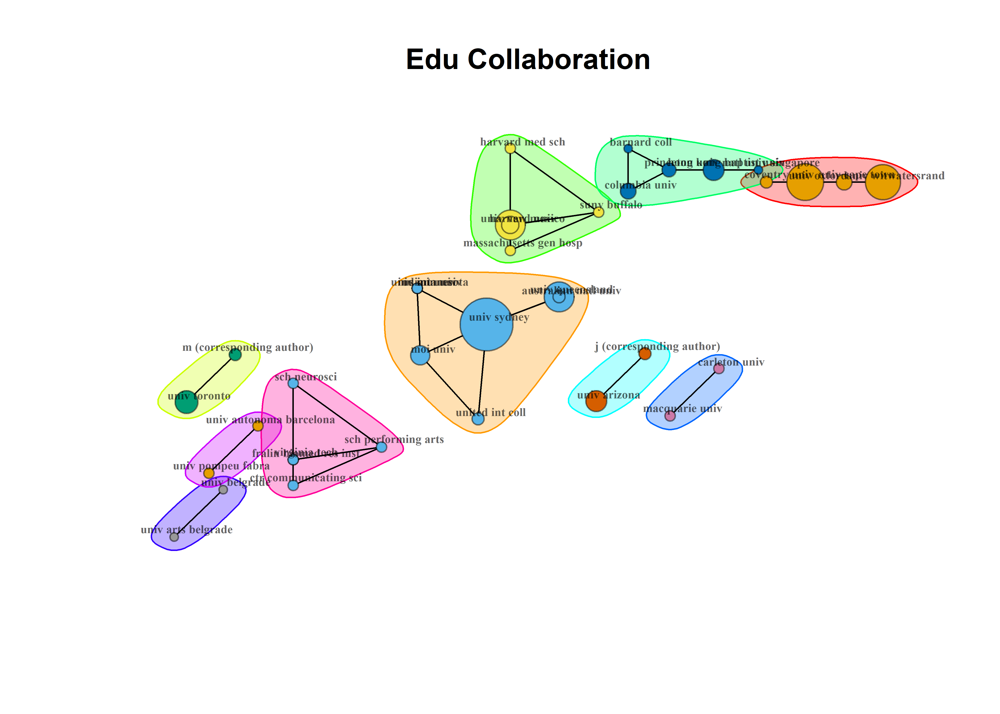

Legend
Label
1 KURATH GP, 1960, CURR ANTHROPOL DOI 10.1086/200101
2 HANNA JL, 1975, CURR ANTHROPOL DOI 10.1086/201578
3 KAEPPLER AL, 1978, ANNU REV ANTHROPOL DOI 10.1146/ANNUREV.AN.07.100178.000335
4 HANNA JL, 1979, CURR ANTHROPOL DOI 10.1086/202269
5 JOHNSTON TF, 1980, CURR ANTHROPOL DOI 10.1086/202465
6 THURMAN MD, 1984, CURR ANTHROPOL DOI 10.1086/203176
7 GRAU A, 1993, DANCE RES J DOI 10.2307/1478551
8 NAEREBOUT FG, 1996, TIJDSCHR GESCHIED DOI
9 HUGHESFREELAND F, 1997, J R ANTHROPOL INST DOI 10.2307/3034763
10 NESS SA, 1997, CULT ANTHROPOL DOI 10.1525/CAN.1997.12.1.64
11 REED SA, 1998, ANNU REV ANTHROPOL DOI 10.1146/ANNUREV.ANTHRO.27.1.503
12 STOFFLE RW, 2000, CURR ANTHROPOL DOI 10.1086/300101
13 KAEPPLER AL, 2000, DANCE RES J DOI 10.2307/1478285
14 KEHOE AB, 2000, CURR ANTHROPOL DOI 10.1086/317409
15 MCNEIL LD, 2001, CURR ANTHROPOL DOI 10.1086/320008
16 MARTINEZ IL, 2002, CRIT ANTHROPOL DOI 10.1177/0308275X02022003758
17 THOMAS DA, 2002, CULT ANTHROPOL DOI 10.1525/CAN.2002.17.4.512
18 REED SA, 2002, CULT ANTHROPOL DOI 10.1525/CAN.2002.17.2.246
19 SPENCER P, 2003, NEAR EAST ARCHAEOL DOI 10.2307/3210914
20 WEIDMAN A, 2003, CULT ANTHROPOL DOI 10.1525/CAN.2003.18.2.194
21 SKINNER J, 2005, ANTHROPOL ACTION DOI 10.3167/096720105793233977
22 HANNA JL, 2005, J PLAN LIT DOI 10.1177/0885412205277071
23 DOWNEY G, 2005, ANTHROPOL ACTION DOI 10.3167/096720105793233922
24 POTUOGLU-COOK O, 2006, CULT ANTHROPOL DOI 10.1525/CAN.2006.21.4.633
25 SKINNER J, 2007, IDENTITIES-GLOB STUD CULT POWER DOI 10.1080/10702890701578480
26 HERMKENS AK, 2007, VIS ANTHROPOL DOI 10.1080/08949460701610589
27 WILLIAMS D, 2008, VIS ANTHROPOL DOI 10.1080/08949460701857610
28 POTTER C, 2008, ETHNOS DOI 10.1080/00141840802563915
29 FISCHER-HORNUNG D, 2008, ATL STUD-GLOB CURR DOI 10.1080/14788810802445099
30 PARTRIDGE DJ, 2008, CULT ANTHROPOL DOI 10.1111/J.1548-1360.2008.00022.X
31 HUTCHINSON S, 2009, J AM FOLK DOI
32 DEL MONTE D, 2009, DANZA RIC DOI
33 ROSTAS S, 2009, CARRYING THE WORD: THE CONCHEROS DANCE IN MEXICO CITY DOI
34 RICHTER K, 2010, RES DANC EDUC DOI 10.1080/14647893.2010.528597
35 GRAU A, 2010, ANTHROPOL NOTEB DOI
36 BANKS OC, 2010, ANTHROPOL NOTEB DOI
37 HANNA JL, 2010, J SEX RES DOI 10.1080/00224491003599744
38 CARINE P, 2010, STAPS-SCI TECH ACT PHYS SPORTIVES DOI 10.3917/STA.089.0051
39 KAEPPLER AL, 2010, OCEANIA DOI 10.1002/J.1834-4461.2010.TB00085.X
40 CITRO S, 2010, J LAT AM CARIBB ANTHROPOL DOI 10.1111/J.1935-4940.2010.01090.X
41 PLANCKE C, 2010, AFRICA DOI 10.3366/AFR.2010.0405
42 CHIN E, 2010, AM ANTHROPOL DOI 10.1111/J.1548-1433.2010.01283.X
43 DURKIN H, 2011, INT J FRANCOPHONE STUDIES DOI 10.1386/IJFS.14.1-2.123\\_1
44 VAN HEEKEREN D, 2011, ASIA PAC J ANTHROPOL DOI 10.1080/14442213.2010.537368
45 HUFFMAN TN, 2011, J AFR ARCHAEOL DOI 10.3213/2191-5784-10197
46 WIRTZ K, 2011, J LINGUIST ANTHROPOL DOI 10.1111/J.1548-1395.2011.01095.X
47 BANKS O, 2012, TRANSFORM ANTHROPOL DOI 10.1111/J.1548-7466.2012.01151.X
48 HUFFMAN TN, 2012, SOUTH AFR HUMANIT DOI
49 FARNELL B, 2012, DYNAMIC EMBODIMENT FOR SOCIAL THEORY: I MOVE THEREFORE I AM DOI
50 ZHEMUKHOV S, 2013, SLAVIC REV DOI
51 FOLEY CE, 2013, STEP DANCING IN IRELAND: CULTURE AND HISTORY DOI
52 SUAREZ LM, 2013, TRANSFORM ANTHROPOL DOI 10.1111/TRAA.12013
53 OBRIEN SC, 2013, COMING FULL CIRCLE: SPIRITUALITY AND WELLNESS AMONG NATIVE COMMUNITIES IN THE PACIFIC NORTHWEST DOI
54 RAPPENGLUECK B, 2014, MEDITERR ARCHAEOL ARCHAEOM DOI
55 KOSKOFF E, 2014, FEMINIST ETHNOMUSICOLOGY: WRITINGS ON MUSIC AND GENDER DOI
56 WINARNITA MS, 2015, BIJD TOT TAAL- LAND- VOLKENKUNDE DOI 10.1163/22134379-17104005
57 DOWNEY G, 2015, QUAL RES DOI 10.1177/1468794114543400
58 RAKOCEVIC S, 2015, YEARB TRADIT MUS DOI
59 MACCARTHY M, 2016, AUST J ANTHROPOL DOI 10.1111/TAJA.12191
60 CHRISTENSEN JF, 2017, ANN NY ACAD SCI DOI 10.1111/NYAS.13420
61 MACDONALD C, 2017, CHARACTER OF HUMAN INSTITUTIONS: ROBIN FOX AND THE RISE OF BIOSOCIAL SCIENCE DOI
62 ELISHA O, 2018, AM ETHNOL DOI 10.1111/AMET.12672
63 KAWANO T, 2018, ARTS PSYCHOTHER DOI 10.1016/J.AIP.2017.09.001
64 BUDANO P, 2019, OPEN ARCHAEOL DOI 10.1515/OPAR-2019-0036
65 JIMENEZ SEDANO L, 2019, ETHNOGR EDUC DOI 10.1080/17457823.2018.1447386
66 JULIA CAROZZI M, 2019, OIDO PENSANTE DOI
67 BARKER M, 2019, ANTHROPOL Q DOI 10.1353/ANQ.2019.0017
68 PATHAK DN, 2019, J HUM VALUES DOI 10.1177/0971685819861220
69 NORMAN SM, 2019, INT J HIST ARCHAEOL DOI 10.1007/S10761-018-0486-X
70 CRAWLEY ML, 2020, DANZA RIC DOI 10.6092/ISSN.2036-1599/11858
71 DECLICH F, 2020, J GLOB SLAVERY DOI 10.1163/2405836X-00501005
72 KESKIN A, 2020, FOLKLOR-EDEBIYAT-FOLKLOR/LIT DOI 10.22559/FOLKLOR.1329
73 HAMMER G, 2020, J R ANTHROPOL INST DOI 10.1111/1467-9655.13314
74 PINES R, 2020, ANTHROPOL AGING DOI 10.5195/AA.2020.209
75 HOOD MM, 2020, WORLD MUS-NEW SER DOI
76 ZAIDEL DW, 2020, WILEY INTERDISCIP REV-COGN SCI DOI 10.1002/WCS.1520
77 CRAWLEY ML, 2020, DANCE RES J DOI 10.1017/S0149767720000194
78 SCHNEIDER TD, 2021, AM ANTHROPOL DOI 10.1111/AMAN.13509
79 CRAWLEY ML, 2021, CHOREONARRATIVES: DANCING STORIES IN GREEK AND ROMAN ANTIQUITY AND BEYOND DOI 10.1163/9789004462632\\_015
80 PLANCKE C, 2021, STAPS-SCI TECH ACT PHYS SPORTIVES DOI 10.3917/STA.HS01.0057
81 RADHAKRISHNAN M, 2021, ASIA PAC J ANTHROPOL DOI 10.1080/14442213.2021.1922496
82 BASSO JC, 2021, FRONT HUM NEUROSCI DOI 10.3389/FNHUM.2020.584312
83 MOLLENHAUER J, 2021, DANCE CHRON DOI 10.1080/01472526.2021.1976703
84 HUNZIKER-RODEWALD R, 2021, BULL AM SCH ORIENT RES DOI 10.1086/716546
85 NORMAN SM, 2021, AM ANTHROPOL DOI 10.1111/AMAN.13591
86 HAMMER G, NA, AM ANTHROPOL DOI 10.1111/AMAN.13539
Author_Keywords
1 <NA>
2 <NA>
3 <NA>
4 <NA>
5 <NA>
6 <NA>
7 <NA>
8 <NA>
9 <NA>
10 <NA>
11 PERFORMANCE; EMBODIMENT; MOVEMENT; IDENTITY; FOLKLORE
12 <NA>
13 <NA>
14 <NA>
15 <NA>
16 CULTURE; DANCE; ETHNICITY; FOLKLORE; MESTIZAJE; NATIONALISM; VENEZUELA
17 <NA>
18 <NA>
19 <NA>
20 <NA>
21 DANCE; LEARNING JOURNAL; FOCUS GROUP; TEACHING AND LEARNING; EDUCATION
22 ADULT ENTERTAINMENT; COURT DECISIONS; EFFECTS; MISCONCEPTIONS;; REGULATIONS
23 PERCEPTUAL LEARNING; PHYSICAL EDUCATION; EMBODIMENT; CAPOEIRA
24 <NA>
25 SALSA; GLOBALIZATION; COSMOPOLITAN; EMOTIONS
26 <NA>
27 <NA>
28 DANCE; KINAESTHESIA; HEAT; TOUCH; BODY; TRAINING; SENSES
29 MAYA DEREN; KATHERINE DUNHAM; ZORA NEALE HURSTON; VODOUN; NEW ORLEANS;; HAITI; CARIBBEAN; FILM; AESTHETICS; ANTHROPOLOGY
30 CITIZENSHIP; SOVEREIGNTY; BLACKNESS; SEXUALITY; FEMINISM; GERMANY
31 <NA>
32 <NA>
33 <NA>
34 ANTHROPOLOGY; AFRICAN DANCE; POSTCOLONIALISM; ETHNOGRAPHY
35 AESTHETICS; AUSTRALIAN ABORIGINES; BALLET; INTERNET FORUMS; DANCE; ICE; SKATING; TAXONOMIES
36 DANCE ANTHROPOLOGY; ETHNOGRAPHY; EPISTEMOLOGY; DANCE PRACTICE; CULTURAL; KNOWLEDGE
37 <NA>
38 DANCE; EMOTION; CONGO-BRAZZAVILLE; ANTHROPOLOGY; PHENOMENOLOGY
39 RITUAL; DANCE; HAWAI'I; TONGA; BULGARIA; INDIA
40 DANCE; EMBODIMENT; ARGENTINE CHACO; TOBA; MOCOVI
41 <NA>
42 <NA>
43 KATHERINE DUNHAM; HAITI; DANCE; ANTHROPOLOGICAL INQUIRY; PARTICIPANT; OBSERVATION; INTERCULTURAL EXCHANGE
44 VULA'A; CHRISTIANITY; CONVERSION; DANCE; MISSIONARIES; ONTOLOGY; PAPUA; NEW GUINEA; PEROVETA; POLYNESIA; SONG; TRADITION
45 HISTORICAL ARCHAEOLOGY; KHAMI PHASE; MAPUNGUBWE LANDSCAPE; ORAL; TRADITION; SOUTH AFRICA; VENDA PERIOD
46 <NA>
47 <NA>
48 HISTORICAL ARCHAEOLOGY; KHAMI PHASE; MACHETE; MAPUNGUBWE LANDSCAPE; ORAL; TRADITION; SOUTH AFRICA; VENDA PERIOD
49 <NA>
50 <NA>
51 <NA>
52 <NA>
53 <NA>
54 DANCE; BODY; RITUAL; CULTURAL ASTRONOMY; COMPARATIVE MYTHOLOGY
55 <NA>
56 INDONESIAN MIGRANT WOMEN; ANTHROPOLOGY OF PERFORMANCE; DISCOURSE OF; AUTHENTICITY
57 ANTHROPOLOGY; APPRENTICESHIP; CAPOEIRA; DANCE; EMBODIMENT; KATHAK;; MARTIAL ARTS; PENCAK SILAT; PHYSICAL EDUCATION; SKILL ACQUISITION
58 <NA>
59 TROBRIAND ISLANDS; TAPIOCA DANCE; PERFORMANCE; CHRISTIANITY; GENDER
60 HUMAN EVOLUTION; DANCE; NEUROAESTHETICS; EMOTION; BODY LANGUAGE;; MOVEMENT
61 <NA>
62 AUTHORITY; DANCE; EMBODIMENT; GENDER; RELIGION; SECULAR; CHRISTIANITY;; AFRICAN AMERICAN; UNITED STATES
63 EMBODIMENT; RITUAL; ENACTMENT; ARTS BASED RESEARCH; ARTS BASED KNOWLEDGE
64 DANCE; PERFORMANCE; SICILIAN PREHISTORY; ADDAURA CAVE; ICONOGRAPHIC; ANALYSIS
65 EMBODIED KNOWLEDGE; DANCE ENCULTURATION; CULTURAL INTIMACY; BREAKDOWN;; SYMBOLIC VIOLENCE; RELUCTANT INFORMANTS
66 TANGO; DANCE ANTHROPOLOGY; NARRATIVE
67 CHILDHOOD; ANIMATION; PERFORMANCE; POSTSOCIALISM; CENTRAL ASIA;; INSTITUTIONALIZATION; MARGINALIZATION
68 BIHU; NATIONAL IDENTITY; VALUE ORIENTATION; FOLKLORE
69 TAKI ONQOY; IDOLATRY; CHICHA-SORAS; IDENTITY; REVITALIZATION
70 <NA>
71 SLAVES; MEMORIES; FILM; ETHNOGRAPHY; DANCE; IDENTITY; PARTICIPATORY; RESEARCH; HISTORY; REFLEXIVITY
72 FOLKLORE; INTERDISCIPLINARY STUDIES; DANCE ANTHROPOLOGY; HALAY; CULTURAL; SIGNS
73 <NA>
74 AGING; BALLET; COMMUNICATION ECOLOGY MODEL OF SUCCESSFUL AGING;; IDENTITY; SOCIAL RELATIONSHIPS
75 <NA>
76 ART EXPRESSIONS; ART ORIGINS; BRAIN AND ART; EVOLUTION; HOMININS; SOCIAL; GROUP SURVIVAL; SYMBOLIC COGNITION
77 <NA>
78 <NA>
79 <NA>
80 DANCE; EMOTION; CONGO-BRAZZAVILLE; ANTHROPOLOGY; PHENOMENOLOGY
81 KAFRIINHA; SRI LANKA; DANCE; MUSIC; PORTUGUESE BURGHERS
82 INTERPERSONAL COORDINATION; IMPROVISATION; NEUROBEHAVIOR; SHARED; INTENTIONALITY; HYPERSCANNING; NEURAL COUPLING; NEURAL SYNCHRONY;; INTERPERSONAL BRAIN SYNCHRONIZATION
83 ETHNIC DANCE; EVOLUTION; HIERARCHY; UNIVERSALISM
84 ARCHAEOLOGY OF JORDAN; ICONOGRAPHY OF JORDAN; FEMALE FIGURINES OF; JORDAN; MUSIC ARCHAEOLOGY; MUSIC ICONOGRAPHY; CLAY RATTLES; DANCE;; ICONOGRAPHY OF BODILY MOVEMENTS; IRON AGE
85 REVITALIZATION; BURIAL; TAKI ONQOY; SPANISH COLONIALISM; ANDES
86 <NA>
KeywordsPlus
1 <NA>
2 <NA>
3 <NA>
4 <NA>
5 <NA>
6 <NA>
7 <NA>
8 ANTHROPOLOGY; BODY
9 <NA>
10 POLITICS; IDENTITY; EMPIRE
11 SOCIAL BODY; RESISTANCE; ANTHROPOLOGY; MUSIC
12 ANTHROPOLOGY; SYSTEMS
13 <NA>
14 <NA>
15 <NA>
16 <NA>
17 <NA>
18 POLITICS
19 <NA>
20 DANCE
21 <NA>
22 <NA>
23 SENSORY INTEGRATION; POSTURAL CONTROL; EXPERTISE; MODEL; ACQUISITION;; STANCE; GYMNASTICS; EXPERIENCE; BEHAVIOR; UPRIGHT
24 REFLECTIONS
25 ANTHROPOLOGY
26 SELF
27 <NA>
28 <NA>
29 <NA>
30 POLITICS; JAMAICA; LOVE
31 ANTHROPOLOGY; CHOREOLOGY; MOVEMENT; MUSIC
32 <NA>
33 PERFORMANCE; PERCUSSION; LANGUAGE; ANTHROPOLOGY; PERSPECTIVE;; EMBODIMENT; TRANSITION; AESTHETICS; MOVEMENTS; CULTURE
34 <NA>
35 SPORT; ART
36 <NA>
37 STRIP CLUB; EXOTIC DANCERS; LAP DANCERS; GENDER; WOMEN; PERFORMANCES;; STRATEGIES; SENSUALITY; RESISTANCE; PATTERNS
38 <NA>
39 DANCE
40 HABITUS; MUSIC
41 ANTHROPOLOGY
42 <NA>
43 <NA>
44 <NA>
45 GIRLS INITIATION SCHOOLS; CENTRAL CATTLE PATTERN; SOUTHERN AFRICA; GREAT; ZIMBABWE; IRON-AGE; SETTLEMENT; SYMBOLISM; DANCES; SONGS; MIMES
46 MEMORY
47 <NA>
48 GIRLS INITIATION SCHOOLS; SOUTHERN AFRICA; VENDA; SYMBOLISM; DANCES;; MIMES; SONGS; SETTLEMENT
49 ANTHROPOLOGY; KNOWLEDGE; LANGUAGE; REALISM; BODIES; DANCE; BODY
50 <NA>
51 ANTHROPOLOGY
52 <NA>
53 PROPHETIC MOVEMENTS; CULTURAL GENOCIDE; GHOST-DANCE; POWER;; ANTHROPOLOGY; CHALLENGE; PROGRAMS; IDENTITY; INDIANS; BODY
54 <NA>
55 SONG PERFORMANCE; BLACK-WOMEN; ANTHROPOLOGY; DANCE; CONSTRUCTION;; POLITICS; POETICS; VOICES; STYLE; WORK
56 <NA>
57 CAPOEIRA
58 ANTHROPOLOGY
59 CHRISTIANITY; CHURCH; SELF
60 QUALITY-OF-LIFE; EMOTIONAL RESPONSES; EXERCISE ADDICTION; POINT-LIGHT;; AESTHETIC PERCEPTION; RHYTHMIC ENGAGEMENT; ACTION ANTICIPATION; HEALTH; PSYCHOLOGY; PHYSICAL BENEFITS; BRAIN MECHANISMS
61 ANTHROPOLOGY; SOCIALITY; DANCE
62 ANTHROPOLOGY; PEDAGOGIES; RELIGION; GENDER; AGENCY
63 ARTS-BASED RESEARCH; MUSIC-THERAPY; ANTHROPOLOGY; PERFORMANCE; RITES
64 <NA>
65 ETHNOGRAPHY; CHALLENGES; ANTHROPOLOGY; REFLECTIONS; ETHNICITY; BODY
66 <NA>
67 STATE
68 DANCE
69 FOOD
70 <NA>
71 ANTHROPOLOGY
72 <NA>
73 BODY; TRANSMISSION; PEOPLE; MOTION; BODIES; SENSE; WALKS
74 LEISURE ACTIVITIES; COMMUNICATION; COMMUNITY; ADULTS; PARTICIPATION;; ANTHROPOLOGY; PERFORMANCE; DEPRESSION; HEALTH; MODEL
75 MUSIC; DANCE
76 MIDDLE STONE-AGE; JEBEL IRHOUD; PAN-PANISCUS; EVOLUTION; BRAIN; ORIGIN;; TECHNOLOGY; REPERTOIRE; COGNITION; MOROCCO
77 <NA>
78 PERSISTENCE; MEMORY; PERIOD; FAMILY
79 <NA>
80 <NA>
81 POLITICS
82 ACTION OBSERVATION NETWORK; EARLY MOTOR-ACTIVITY; AGE-RELATED-CHANGES;; INTERPERSONAL SYNCHRONY; NEURAL SYNCHRONIZATION; DANCE/MOVEMENT THERAPY;; CORTICAL OSCILLATIONS; GAMMA OSCILLATIONS; PHYSICAL-ACTIVITY; SOCIAL; COGNITION
83 ANTHROPOLOGY
84 DANCE
85 CULTURE CONTACT; ARCHAEOLOGY; REVITALIZATION; AGENCY; PERSISTENCE;; CATEGORIES; THINGS
86 <NA>
DOI Year LCS GCS
1 10.1086/200101 1960 12 42
2 10.1086/201578 1975 2 3
3 10.1146/annurev.an.07.100178.000335 1978 16 64
4 10.1086/202269 1979 3 21
5 10.1086/202465 1980 1 3
6 10.1086/203176 1984 1 7
7 10.2307/1478551 1993 4 9
8 1996 0 0
9 10.2307/3034763 1997 0 12
10 10.1525/can.1997.12.1.64 1997 2 12
11 10.1146/annurev.anthro.27.1.503 1998 16 93
12 10.1086/300101 2000 2 24
13 10.2307/1478285 2000 11 50
14 10.1086/317409 2000 0 0
15 10.1086/320008 2001 0 2
16 10.1177/0308275X02022003758 2002 1 4
17 10.1525/can.2002.17.4.512 2002 3 24
18 10.1525/can.2002.17.2.246 2002 1 11
19 10.2307/3210914 2003 1 5
20 10.1525/can.2003.18.2.194 2003 1 25
21 10.3167/096720105793233977 2005 1 1
22 10.1177/0885412205277071 2005 1 31
23 10.3167/096720105793233922 2005 1 12
24 10.1525/can.2006.21.4.633 2006 0 51
25 10.1080/10702890701578480 2007 0 18
26 10.1080/08949460701610589 2007 1 8
27 10.1080/08949460701857610 2008 0 0
28 10.1080/00141840802563915 2008 2 74
29 10.1080/14788810802445099 2008 1 4
30 10.1111/j.1548-1360.2008.00022.x 2008 0 24
31 2009 0 0
32 2009 0 0
33 2009 0 16
34 10.1080/14647893.2010.528597 2010 1 2
35 2010 1 1
36 2010 0 2
37 10.1080/00224491003599744 2010 0 39
38 10.3917/sta.089.0051 2010 0 0
39 10.1002/j.1834-4461.2010.tb00085.x 2010 1 4
40 10.1111/j.1935-4940.2010.01090.x 2010 0 2
41 10.3366/afr.2010.0405 2010 2 6
42 10.1111/j.1548-1433.2010.01283.x 2010 1 3
43 10.1386/ijfs.14.1-2.123\\_1 2011 0 0
44 10.1080/14442213.2010.537368 2011 1 10
45 10.3213/2191-5784-10197 2011 1 17
46 10.1111/j.1548-1395.2011.01095.x 2011 1 11
47 10.1111/j.1548-7466.2012.01151.x 2012 0 4
48 2012 0 19
49 2012 0 24
50 2013 0 7
51 2013 0 21
52 10.1111/traa.12013 2013 0 1
53 2013 0 3
54 2014 0 0
55 2014 0 32
56 10.1163/22134379-17104005 2015 0 0
57 10.1177/1468794114543400 2015 1 42
58 2015 0 3
59 10.1111/taja.12191 2016 0 2
60 10.1111/nyas.13420 2017 2 20
61 2017 0 0
62 10.1111/amet.12672 2018 0 5
63 10.1016/j.aip.2017.09.001 2018 0 1
64 10.1515/opar-2019-0036 2019 0 0
65 10.1080/17457823.2018.1447386 2019 0 0
66 2019 0 0
67 10.1353/anq.2019.0017 2019 0 6
68 10.1177/0971685819861220 2019 0 0
69 10.1007/s10761-018-0486-x 2019 1 3
70 10.6092/issn.2036-1599/11858 2020 0 0
71 10.1163/2405836X-00501005 2020 0 0
72 10.22559/folklor.1329 2020 0 0
73 10.1111/1467-9655.13314 2020 0 2
74 10.5195/aa.2020.209 2020 0 0
75 2020 0 0
76 10.1002/wcs.1520 2020 0 5
77 10.1017/S0149767720000194 2020 2 2
78 10.1111/aman.13509 2021 0 0
79 10.1163/9789004462632\\_015 2021 0 0
80 10.3917/sta.HS01.0057 2021 0 0
81 10.1080/14442213.2021.1922496 2021 0 0
82 10.3389/fnhum.2020.584312 2021 0 11
83 10.1080/01472526.2021.1976703 2021 0 0
84 10.1086/716546 2021 0 0
85 10.1111/aman.13591 2021 0 0
86 10.1111/aman.13539 NA 0 0


Social structure
Author collaboration
Scientific collaborations are plotted where nodes are authors and links are co-authorships, illustrating collaborations between authors.

Edu collaboration
Scientific collaborations are plotted where nodes are institutions and links are co-authorships, illustrating collaborations between institutions.
